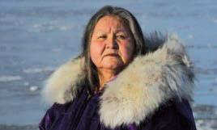

Foto: Goldman Environmental Foundation
Los inuit, pobladores del Ártico, conocen la magnífica biodiversidad de la zona que habitan y son testigos directos del daño ambiental en la región.
Caroline Cannon, integrante de esta comunidad, ha enfrentado durante años a poderosas empresas interesadas en la riqueza petrolera de la región ártica.
Trabaja junto a grupos de científicos para frenar la destrucción del medio ambiente en el que habita.